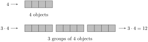
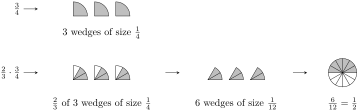

Interpret multiplication of fractions as a two step process: Counting the number of wedges and determining the size of the wedges.
Multiply fractions involving both numbers and variables.
Cancel terms in fraction multiplication problems before multiplying.
Many students have learned that to multiply fractions, you must "multiply straight across." Not as many students have stopped to ask the question of why that’s the right way to multiply fractions. In this section, we’re going to explore this idea more deeply to bring some intuition to that manipulation.
We will start by looking at a simple diagram to represent multiplication with integers. One concept we use for multiplication is by having multiple groups with the same number of elements.

The same idea applies to fractions using the wedges from looking at parts of a whole.
If we think about the structure of a fraction, the numerator represents the number of pieces that we have. And so it would make sense that if we have groups of wedges we would be multiplying the numerator by that quantity.
So we have a clear picture of what it looks like to have multiple groupings of fractional quantities. But what about a fractional grouping? We will once again work from diagrams.
It shouldn’t be a surprise that we ended up with the same result since multiplication is commutative. We can even visually see that the two pictures of \(\frac{9}{4}\) have the same number of shaded wedges (just in a different arrangement). But this is an important step because it then gives us access to understand multiplying a fraction by a fraction.

The last set of images gives us the big insight that we need to understand fraction multiplication. We went from \(\frac{2}{3}\) of 3 wedges of size \(\frac{1}{4}\) to 6 wedges of size \(\frac{1}{12}\text{.}\) Let’s take a look at each of these parts separately.
6 wedges: We started with 3 wedges, and each of these turned into 2 (smaller) wedges. So we have that the 6 comes from 3 groups of 2 wedges.
Wedges of size \(\frac{1}{12}\text{:}\) The starting wedge size was \(\frac{1}{4}\text{,}\) which corresponds to cutting the whole into 4 equal pieces. Each of these pieces was cut 3 into pieces, which gives a total of 12 pieces for the whole. This is why that the wedges are size \(\frac{1}{12}\text{.}\)
This observation shows us that fraction multiplication is essentially a two-step process. We multiply the numerators together to get an accurate count of the number of wedges, and we multiply the denominators together to get the correct wedge size.
Activity19.1.Fraction Multiplication Using a Diagram.
Now that we have the conceptual framework in place, we can understand the why the phrase "multiply straight across" for fraction multiplication actually works. For a fraction, the numerator represents the number of wedges and the denominator represents the size of the wedges. When we multiply the numerators, we’re counting for the total number of wedges (a number of groups of a certain size). When we multiply the denominators, we’re establishing the size of the wedges (based on parts of a part of a whole).
Try it!
Draw a diagram to represent the product \(\frac{1}{2} \cdot \frac{3}{4}\text{.}\)
Solution.
The practice of multiplying fractions looks nothing like the concept. This is not an uncommon situation in life. Most adults know how to drive a car, but very few of them can actually explain the processes involved between pressing the gas pedal and the car moving. In this analogy, we’ve just finished describing how the engine works, and now we’re going to just focus on driving the car.
The "rule" of multiplying straight across is expressed using algebraic symbols in the following manner.
Theorem19.1.The Product of Fractions.
The product of the fractions \(\frac{a}{b}\) and \(\frac{c}{d}\) is guiven by the following formula.
It turns out that by using a little foresight, large fractions can sometimes be avoided by reducing before multiplying. The idea is the same as reducing a fraction. We are going to look for factors that appear in the product for both the numerator and the denominator. This requires you to identify common factors between the terms in the numerator and the terms in the denominator.
Algebra is a skill, which means it requires practice to become proficient. But it will take more than rote repetition to get there. Deliberate practice is the thoughtful repetition of a task. For each of these sections, you will be given a list of specific skills or ideas to focus on as you practice thinking through the problems.
One of the challenges for students is that fractions seem so different from the rest of their arithmetic. All of the additional "rules" that are put into place to do the calculation make it feel so much different than addition with integers or even decimals. Multiplication is in some ways the easiest because it’s still just multiplication, and the top and the bottom are often separated by a bar to help visually separate the two pieces.
But there’s a different challenge that comes with this. When the calculations are easy to execute, it’s easy to think that you understand something when you’re consistently able to get the right answer. Understanding is not the same as executing. Going back to the analogy that was introduced earlier, knowing how you to drive a car doesn’t mean that you know how a car works. But with mathematics, many students are taught a mentality that the execution and the understanding are the same thing. Hopefully, as you’ve been working through this text, you’re starting to adopt a different mindset.
It is often stated that strong math skills are important for finding good jobs that pay well. But do you think those jobs are about doing calculations? We have computers that can do that billions of times faster than any human can. So they clearly aren’t just looking for people who can execute calculations. They want people who can think mathematically. In fact, there are many people who are only average in their computational abilities in those types of jobs. (Once again, they have computers to do the calculations for them!) But they are able to get into those positions because they know how to think mathematically. They understand how to reason through ideas and make connections.
As we continue forward in our journey, we’re going to be looking at ideas that are going to get increasingly familiar. There’s even an entire branch that focuses on basic arithmetic. Remember that the goal isn’t to teach you how to do calculations. The goal is to help you to develop your skills in mathematical thinking.
In Section 9.1 and Section 9.5, we looked at various factoring ideas and techniques. We’re going to push that a little bit deeper here. Before getting started, we want to remind ourselves of the most common special factorizations patterns from that section:
\begin{equation*}
\begin{array}{ll}
\text{Square of a binomial sum:} \amp a^2 + 2ab + b^2 = (a + b)^2 \\
\text{Square of a binomial difference:} \amp a^2 - 2ab + b^2 = (a - b)^2 \\
\text{Difference of squares:} \amp a^2 - b^2 = (a + b)(a - b) \\
\text{Sum of cubes:} \amp a^3 + b^3 = (a + b)(a^2 - ab + b^2) \\
\text{Difference of cubes:} \amp a^3 - b^3 = (a - b)(a^2 + ab + b^2)
\end{array}
\end{equation*}
When working with these expressions, we noted how we can use these formulas to factor expressions even when the expressions contain multiple variables or higher powers of the variables. As long as the expression can be made to fit the form, then the factorization works.
But there’s something else that can happen with those more complicated expressions, which is that it may take multiple factorizations to factor it completely. In other words, after one factorization step, you may discover that the factors can be factored again. Here is an example:
Unfortunately, there is no indicator that you will need to continue to factor other than recognizing that you can continue to factor. However, as you gain experience, you will get better at recognizing when expressions can be factored and when they can’t.
It turns out that the \(ac\) method of factoring can also be extended to factor certain types of expressions. Expressions of this type are said to be quadratic in form, which means that we can treat them as a quadratic expression by thinking about them in the right way. Here is an example:
\begin{equation*}
x^4 + 4x^2 - 5
\end{equation*}
This is not a quadratic expression, but it is quadratic in form. This means that if we think about it the right way, we can treat it like a quadratic expression. Specifically, we can rewrite it by treating \(x^2\) as the variable:
It would be nice if there were some fixed set of rules for when to factor expressions and when to leave them alone. Unfortunately, those decisions are often driven by context. The most common place this becomes an issue is with a difference of squares. For example, consider this quadratic expression:
\begin{equation*}
x^2 - 3
\end{equation*}
On the one hand, we can look at this and say that is not a perfect square and just leave it in that form. On the other hand, while isn’t a perfect square, it is the square of which means that we can still factor it.
Does this mean that we should factor \(x^2 - 3\) using square roots? The answer is that it depends. The factorization into linear terms is helpful for some mathematical operations, but other times it’s an unnecessary step. So the decision of whether to factor will be dependent upon the context. This is an idea that we’ve touched on many times before, which is that you don’t want to think about math as a set of rules that you follow every single time. It is better to recognize that you have the option of taking that factorization one step further, but then to decide what you’re going to do based on the specific goals for the problem.
This may not be the last factoring technique that you’ll encounter. In many precalculus courses, you will learn about other techniques that can be applied to help to sometimes factor higher degree polynomials that don’t fit any of our current ideas. But even with that technique, you still will not be able to factor everything. In fact, one of the big questions that mathematicians had wondered about for a long time is whether there’s a formula that can be used to factor everything. This question was ultimately answered in the early 1800s, when it was proven that there are fifth degree equations that have roots that are "impossible" write down.